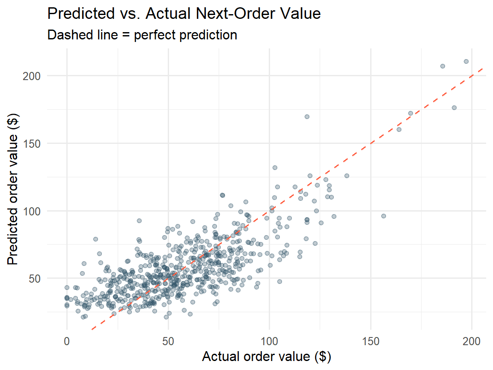
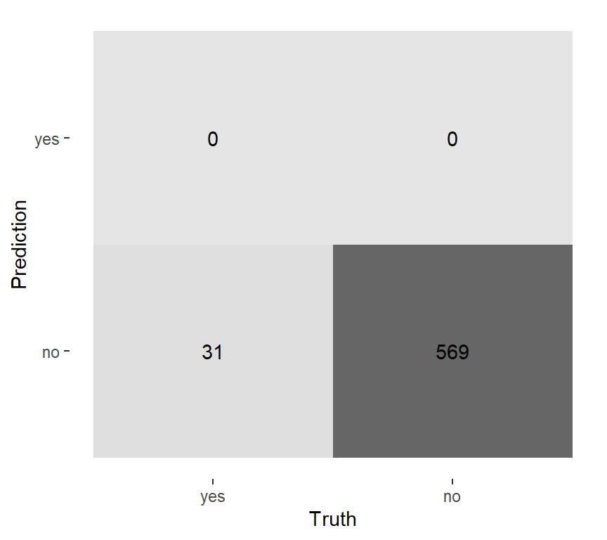
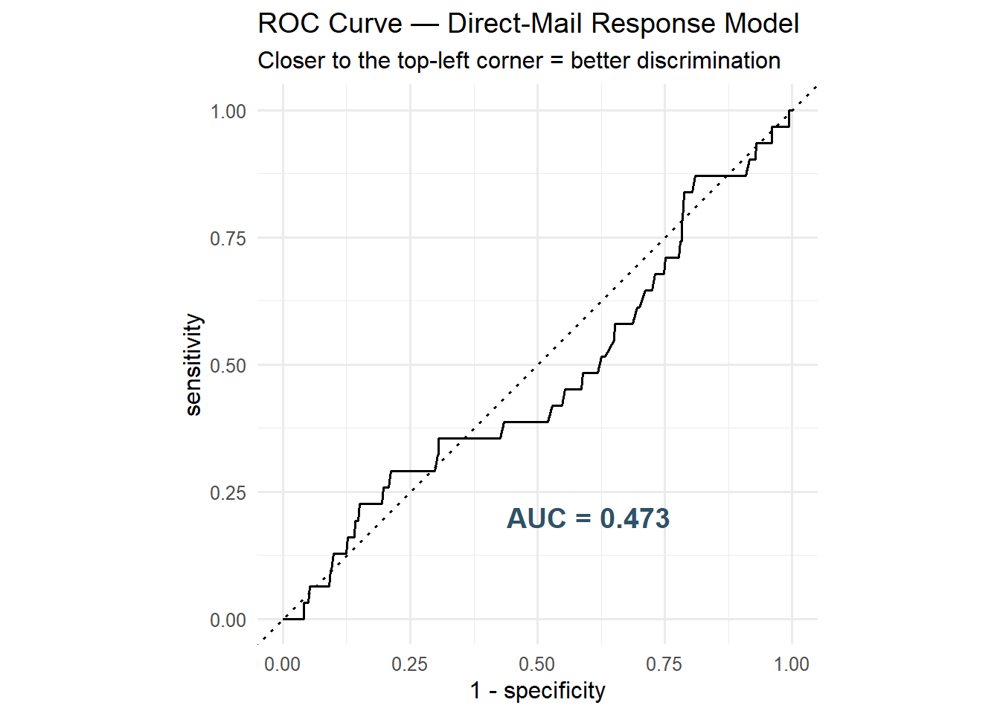
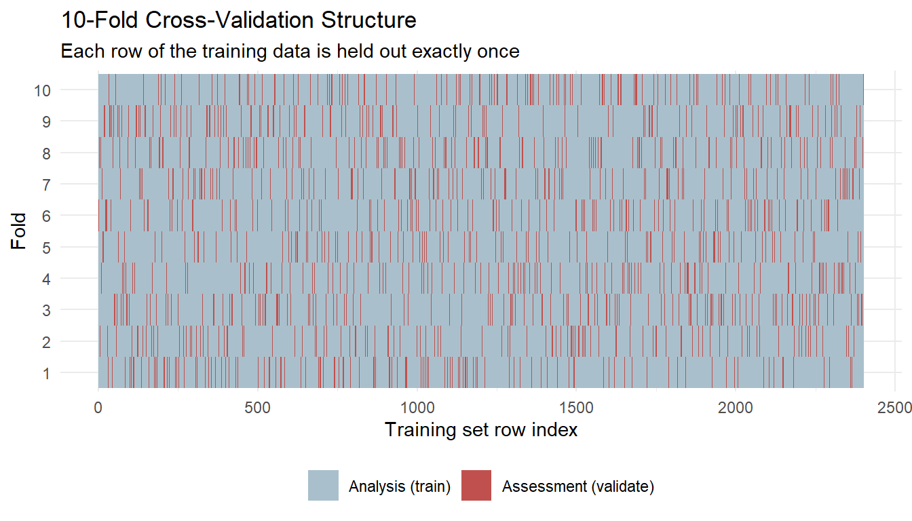
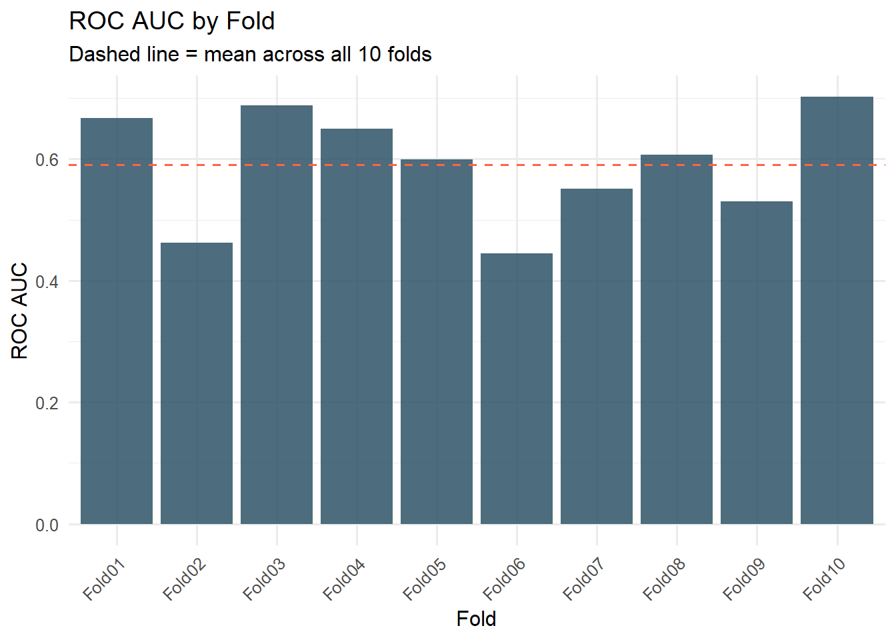
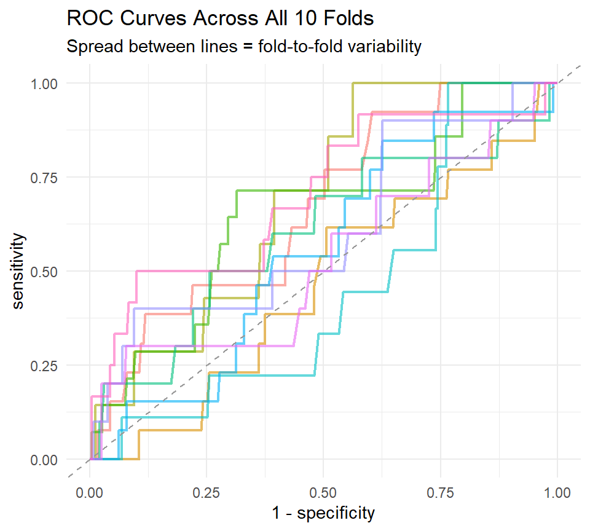

Code
library(tidymodels) # umbrella: rsample, recipes, parsnip, workflows, yardstick
library(tidyverse)
library(gt) # pretty tables
library(patchwork) # combine plots
tidymodels_prefer() # resolve function-name conflicts
set.seed(2026)Applied Machine Learning for Marketing
Jae Jung
June 28, 2026
By the end of this notebook you will be able to:
yardstickvfold_cv() and other resampling schemes with rsamplefit_resamples() to get a trustworthy estimate of model performanceTextbook reference: Tidy Modeling with R (TMWR), Chapters 9 & 10 (https://www.tmwr.org/performance, https://www.tmwr.org/resampling)
We return to our synthetic direct-mail dataset from Week 2. Each row is one prospect; the outcome is whether they responded (bought).
# ── Synthetic direct-mail dataset (same generator as Week 2 / Week 7) ─────────
set.seed(123)
n <- 3000
mail_data <- tibble(
customer_id = paste0("C", str_pad(1:n, 5, pad = "0")),
age = round(rnorm(n, mean = 45, sd = 12)),
income = round(rlnorm(n, meanlog = 10.8, sdlog = 0.6)), # right-skewed
recency_days = round(rexp(n, rate = 1 / 60)), # days since last purchase
freq_12mo = rpois(n, lambda = 3), # purchases in 12 months
avg_order_amt = round(rlnorm(n, meanlog = 4.2, sdlog = 0.5), 2),
channel = sample(
c("email", "direct_mail", "digital"),
n,
replace = TRUE,
prob = c(0.5, 0.3, 0.2)
),
region = sample(
c("West", "South", "Midwest", "Northeast"),
n,
replace = TRUE
),
loyalty_tier = factor(
sample(
c("Bronze", "Silver", "Gold", "Platinum"),
n,
replace = TRUE,
prob = c(0.4, 0.3, 0.2, 0.1)
),
levels = c("Bronze", "Silver", "Gold", "Platinum")
),
responded = rbinom(
n,
1,
prob = plogis(
-3 +
0.02 * (age - 45) +
0.3 * log(income / 50000) +
0.1 * freq_12mo -
0.005 * recency_days
)
)
) |>
mutate(
income = if_else(runif(n) < 0.08, NA_real_, income),
avg_order_amt = if_else(runif(n) < 0.05, NA_real_, avg_order_amt),
responded = factor(responded, levels = c(1, 0), labels = c("yes", "no"))
)
# introduce ~8 % missingness in income and avg_order_amt
glimpse(mail_data)Rows: 3,000
Columns: 10
$ customer_id <chr> "C00001", "C00002", "C00003", "C00004", "C00005", "C0000…
$ age <dbl> 38, 42, 64, 46, 47, 66, 51, 30, 37, 40, 60, 49, 50, 46, …
$ income <dbl> 44793, 40269, 20560, 32261, 233070, 47933, 84804, 43883,…
$ recency_days <dbl> 103, 102, 27, 115, 47, 106, 4, 62, 13, 21, 139, 100, 9, …
$ freq_12mo <int> 4, 3, 0, 3, 1, 3, 5, 2, 1, 6, 1, 3, 3, 3, 6, 1, 1, 1, 6,…
$ avg_order_amt <dbl> 80.19, NA, 54.80, 46.49, 64.86, 78.43, 39.45, NA, 68.26,…
$ channel <chr> "email", "digital", "digital", "email", "digital", "dire…
$ region <chr> "West", "South", "Northeast", "Northeast", "Midwest", "W…
$ loyalty_tier <fct> Bronze, Bronze, Bronze, Bronze, Gold, Silver, Bronze, Br…
$ responded <fct> no, no, yes, no, yes, yes, no, no, no, no, no, no, no, n…We also derive a continuous target — order_value_next — so we have a realistic stand-in for regression metrics in Section 1. Think of this as “expected next-order revenue,” something a marketer might forecast for budget planning.
Marketing context. responded (yes/no) is our classification target — will this prospect respond to the next campaign? order_value_next is our regression target — how much will they spend on their next order? Both are common marketing prediction tasks, and TMWR Chapter 9 covers metrics for each.
Before we can evaluate anything, we need a fitted model. We reuse the same split-then-recipe workflow from Week 2.
Training rows: 2400 Test rows : 600 mail_rec <- recipe(
responded ~ age +
income +
recency_days +
freq_12mo +
avg_order_amt +
channel +
region +
loyalty_tier,
data = mail_train
) |>
step_impute_median(all_numeric_predictors()) |>
step_log(income, avg_order_amt, recency_days, base = 10, offset = 1) |>
step_normalize(all_numeric_predictors()) |>
step_dummy(all_nominal_predictors()) |>
step_zv(all_predictors())
lr_spec <- logistic_reg(penalty = 0.01, mixture = 1) |> # Lasso
set_engine("glmnet") |>
set_mode("classification")
mail_wf <- workflow() |>
add_recipe(mail_rec) |>
add_model(lr_spec)
mail_fit <- fit(mail_wf, data = mail_train)A fitted model is only useful if we can say, in concrete numeric terms, how good its predictions are.
yardstick is the tidymodels package for this — every metric function takes truth and an estimate/probability column and returns a tidy one-row tibble.
There is no single “best” metric. The right metric depends on the business question. For a churn model, missing a true churner (low sensitivity) might be far more costly than flagging a loyal customer by mistake (low specificity). Always pick metrics that match the marketing decision the model supports.
We don’t have a regression model yet in this notebook, so we’ll fit one quickly — predicting order_value_next from a few predictors — purely to demonstrate the metrics.
reg_spec <- linear_reg() |>
set_engine("lm")
reg_rec <- recipe(
order_value_next ~ income + freq_12mo + recency_days,
data = mail_train
) |>
step_impute_median(all_numeric_predictors()) |>
step_normalize(all_numeric_predictors())
reg_wf <- workflow() |> add_recipe(reg_rec) |> add_model(reg_spec)
reg_fit <- fit(reg_wf, data = mail_train)
reg_preds <- augment(reg_fit, new_data = mail_test)
reg_preds |> select(customer_id, order_value_next, .pred, .resid) |> head()Average prediction error, in the original units (dollars here). Penalizes large errors more heavily because errors are squared before averaging.
\[ RMSE = \sqrt{\frac{1}{n}\sum_{i=1}^{n}(y_i - \hat{y}_i)^2} \]
Where
RMSE is in the same units as the outcome variable — dollars, in our case — making it directly interpretable.
Proportion of variance in the outcome explained by the model.
Ranges roughly 0–1; higher is better.
Useful for communicating “how much of next-order value our model explains” to stakeholders.
\[ R^2 = 1 - \frac{\sum_{i=1}^{n}(y_i - \hat{y}_i)^2}{\sum_{i=1}^{n}(y_i - \bar{y})^2} \]
Where:
Average absolute error, less sensitive to outliers than RMSE.
If a few extreme spenders are skewing RMSE, compare it against MAE.
\[ MAE = \frac{1}{n}\sum_{i=1}^{n}|y_i - \hat{y}_i| \]
Where:
ggplot(reg_preds, aes(x = order_value_next, y = .pred)) +
geom_point(alpha = 0.3, color = "#2E5266") +
geom_abline(slope = 1, intercept = 0, linetype = "dashed", color = "tomato") +
labs(
title = "Predicted vs. Actual Next-Order Value",
subtitle = "Dashed line = perfect prediction",
x = "Actual order value ($)",
y = "Predicted order value ($)"
) +
theme_minimal(base_size = 12)
Back to our responded (yes/no) model. The starting point for classification metrics is the confusion matrix: a 2×2 table of predicted vs. actual class.
Truth
Prediction yes no
yes 0 0
no 31 569
| Metric | Formula (informal) | Marketing question it answers |
|---|---|---|
| Sensitivity (recall) | TP / (TP + FN) | Of customers who would respond, how many did we catch? |
| Specificity | TN / (TN + FP) | Of customers who wouldn’t respond, how many did we correctly skip? |
| Precision (PPV) | TP / (TP + FP) | Of customers we targeted, how many actually responded? |
| Accuracy | (TP + TN) / Total | Overall, how often is the model right? (misleading with rare classes — see warning below) |
\[ \text{Sensitivity} = \frac{TP}{TP + FN} \]
Where:
\[ \text{Specificity} = \frac{TN}{TN + FP} \]
Where:
\[ \text{Precision} = \frac{TP}{TP + FP} \]
Where:
\[ \text{Accuracy} = \frac{TP + TN}{TP + TN + FP + FN} \]
Where:
\[ F_1 = 2 \times \frac{\text{Precision} \times \text{Sensitivity}}{\text{Precision} + \text{Sensitivity}} \]
Where:
Accuracy is dangerous with imbalanced classes. Direct-mail response rates are often only 3–8%. A model that predicts “no” for everyone could still score 95%+ accuracy while being completely useless for targeting. Always check sensitivity/specificity alongside accuracy — this is exactly the kind of trap a stakeholder unfamiliar with the data could fall into.
Sensitivity and specificity above were computed at a single classification threshold (0.5 by default). The ROC curve shows the sensitivity/specificity trade-off across every possible threshold, and AUC summarizes the whole curve in one number.
autoplot(roc_data) +
annotate(
"text",
x = 0.6,
y = 0.2,
label = paste0("AUC = ", round(auc_val, 3)),
size = 5,
color = "#2E5266",
fontface = "bold"
) +
labs(
title = "ROC Curve — Direct-Mail Response Model",
subtitle = "Closer to the top-left corner = better discrimination"
) +
theme_minimal(base_size = 12)
Rule of thumb. AUC = 0.5 means the model is no better than a coin flip. AUC = 1.0 is a perfect classifier (rare in practice). For direct-mail targeting, AUC > 0.65 is often usable; > 0.75 is quite good.
loyalty_tier (Bronze/Silver/Gold/Platinum) is a 4-level outcome. While we won’t build a full multiclass model here, it’s worth knowing how the binary metrics above generalize.
# Demonstration only: predict loyalty_tier from age + income as a toy multiclass model
multi_rec <- recipe(loyalty_tier ~ age + income, data = mail_train) |>
step_impute_median(all_numeric_predictors()) |>
step_normalize(all_numeric_predictors())
multi_spec <- multinom_reg() |> set_engine("nnet")
multi_wf <- workflow() |> add_recipe(multi_rec) |> add_model(multi_spec)
multi_fit <- fit(multi_wf, data = mail_train)
multi_preds <- augment(multi_fit, new_data = mail_test)
multi_preds |>
metric_set(accuracy, sens)(truth = loyalty_tier, estimate = .pred_class)[1] 0.4817859With more than two classes, yardstick computes a metric per class (treating each as “this class” vs. “all others”), then averages across classes. The default is macro-averaging — each class counts equally, regardless of how many observations it has. This matters for loyalty_tier: Platinum customers are rare, but macro-averaging keeps them from being drowned out by the much larger Bronze group.
Refer to Chapter 10
The metrics above were all computed on a single test set. That gives us a number — but how much would that number change if we’d happened to split the data differently? Resampling answers this question.
What happens if we evaluate the model on the same data it was trained on?
train_preds <- augment(mail_fit, new_data = mail_train)
bind_rows(
train_preds |>
class_metrics(truth = responded, estimate = .pred_class) |>
mutate(data = "training (resubstitution)"),
test_preds |>
class_metrics(truth = responded, estimate = .pred_class) |>
mutate(data = "test (held out)")
) |>
select(data, .metric, .estimate) |>
pivot_wider(names_from = data, values_from = .estimate)Resubstitution is optimistic. The model has already “seen” the training data and partially memorized its noise, so performance measured there is inflated relative to how the model will do on genuinely new prospects. This gap is usually small for simple models like regularized logistic regression, but it can be large for flexible models (deep trees, boosted ensembles) — which is exactly why we need a principled way to estimate out-of-sample performance without permanently sacrificing data to a single test set.
The test set should be touched once, at the very end, to report final performance. If we use it over and over while comparing models or tuning hyperparameters, we implicitly start fitting to it — defeating its purpose. Resampling lets us get reliable performance estimates using only the training data, keeping the test set untouched until final evaluation.
The most common resampling scheme is v-fold (k-fold) cross-validation: split the training data into v roughly equal folds, train on v − 1 of them, evaluate on the held-out fold, and rotate until every fold has served as the validation set exactly once.
vfold_cv() Just Built
mail_folds is a tibble of 10 rsplit objects. Each one knows which rows of mail_train are the analysis set (≈ 90%, used for fitting) and which are the assessment set (≈ 10%, used for scoring) for that fold. strata = responded keeps the response rate roughly constant across folds — same logic as stratifying the original train/test split in Week 2.
fold_viz <- map_dfr(seq_along(mail_folds$splits), function(i) {
split <- mail_folds$splits[[i]]
tibble(
fold = i,
row = 1:nrow(mail_train),
role = if_else(
row %in% split$in_id,
"Analysis (train)",
"Assessment (validate)"
)
)
})
ggplot(fold_viz, aes(x = row, y = factor(fold), fill = role)) +
geom_tile() +
scale_fill_manual(
values = c(
"Analysis (train)" = "#A9C0CC",
"Assessment (validate)" = "#C0504D"
)
) +
labs(
title = "10-Fold Cross-Validation Structure",
subtitle = "Each row of the training data is held out exactly once",
x = "Training set row index",
y = "Fold",
fill = NULL
) +
theme_minimal(base_size = 11) +
theme(legend.position = "bottom")
Repeated CV total resamples: 50 Bootstrap resamples: 25 | Method | When to use it | Tradeoff |
|---|---|---|
| V-fold CV | Default choice for most marketing datasets | Good balance of bias and computation |
| Repeated CV | Smaller datasets where fold-to-fold variability is high | More stable estimates, v × repeats the compute |
| Bootstrap | Want a measure of estimate uncertainty, or very small data | Some observations never appear in assessment sets |
| Validation set | Very large data where CV is too slow | Only one estimate — less stable than CV |
| Rolling origin | Time-ordered data (e.g., monthly campaign cohorts) | Respects temporal order; no shuffling allowed |
fit_resamples()This is where it all comes together: fit the workflow on each fold’s analysis set, score it on the assessment set, and average the results.
bind_rows(
test_preds |>
metric_set(accuracy, roc_auc)(
truth = responded,
estimate = .pred_class,
.pred_yes
) |>
mutate(source = "Single test set"),
collect_metrics(cv_results) |>
filter(.metric %in% c("accuracy", "roc_auc")) |>
select(.metric, .estimate = mean) |>
mutate(source = "10-fold CV mean")
) |>
select(source, .metric, .estimate) |>
pivot_wider(names_from = source, values_from = .estimate)The single test-set number is one draw from a distribution of possible performance estimates. The cross-validated mean averages over 10 different draws, giving a more stable — and more honest — picture of how the model is likely to perform on new prospects. The standard error reported by collect_metrics() tells us how much that estimate might wobble.
collect_metrics(cv_results, summarize = FALSE) |>
filter(.metric == "roc_auc") |>
ggplot(aes(x = id, y = .estimate)) +
geom_col(fill = "#2E5266", alpha = 0.85) +
geom_hline(
aes(yintercept = mean(.estimate)),
linetype = "dashed",
color = "tomato"
) +
labs(
title = "ROC AUC by Fold",
subtitle = "Dashed line = mean across all 10 folds",
x = "Fold",
y = "ROC AUC"
) +
theme_minimal(base_size = 12) +
theme(axis.text.x = element_text(angle = 45, hjust = 1))
# Resampling fits the same workflow many times — an embarrassingly parallel task.
# On a multi-core machine, register a parallel backend before fit_resamples():
# install.packages("doParallel")
library(doParallel)
cl <- makePSOCKcluster(parallel::detectCores() - 1)
registerDoParallel(cl)
cv_results <- fit_resamples(mail_wf, resamples = mail_folds)
stopCluster(cl)We don’t run this chunk live in class (it depends on your machine’s core count), but know that fit_resamples(), tune_grid(), and friends all parallelize automatically once a backend is registered — useful once your resampling scheme + grid search gets large later in the course.
cv_preds |>
group_by(id) |>
roc_curve(truth = responded, .pred_yes) |>
ggplot(aes(x = 1 - specificity, y = sensitivity, color = id)) +
geom_path(alpha = 0.6, linewidth = 0.8) +
geom_abline(linetype = "dashed", color = "gray60") +
labs(
title = "ROC Curves Across All 10 Folds",
subtitle = "Spread between lines = fold-to-fold variability",
color = "Fold"
) +
theme_minimal(base_size = 11) +
theme(legend.position = "none")
Why save predictions? With save_pred = TRUE, we get every out-of-fold prediction back, which lets us build diagnostic plots like the multi-fold ROC curve above, inspect specific misclassified prospects, or build custom metrics — all without ever touching the test set.
Part A — Reading the Confusion Matrix
Run conf_mat(test_preds, truth = responded, estimate = .pred_class) and use the output to answer:
Part B — Threshold Tradeoff
Using test_preds, compute precision and sens at the default 0.5 threshold. Now manually create a new .pred_class column using a threshold of 0.3 instead (classify as “yes” if .pred_yes > 0.3). Recompute both metrics. Which one increased, and why does lowering the threshold have that effect?
metric_set()Part A — Interpreting AUC
The notebook computed roc_auc for the direct-mail response model.
roc-curve chunk. Is it above or below 0.65 (the “usable for targeting” threshold from the callout)?Part B — Custom metric_set()
Create a metric_set() containing accuracy, roc_auc, sens, spec, and f_meas. Apply it to test_preds. If you had to report just two of these five numbers to a VP of Marketing who is unfamiliar with machine learning metrics, which would you choose and why?
Add one synthetic “whale” customer to reg_preds with order_value_next = 5000 and .pred = 200 (a badly missed prediction). Recompute rmse and mae. Which metric moved more in percentage terms? What does this tell you about choosing RMSE vs. MAE for marketing data with occasional huge orders?
Re-run the multiclass loyalty_tier example using estimator = "micro" instead of the default macro averaging for sens. Also run it with estimator = "macro_weighted". Compare all three numbers.
Part A — Change the Number of Folds
Re-run vfold_cv() with v = 5 instead of v = 10. Re-fit with fit_resamples() and compare the mean roc_auc and its standard error to the 10-fold result from the notebook. What happens to the standard error as v decreases, and why?
Part B — Bridge to Part 1
Now compare your 5-fold CV mean roc_auc to the single test-set roc_auc you computed in Part 1 (Section 4 of the notebook).
Run fit_resamples() using boot_resamples (already created above) instead of mail_folds. Compare the mean roc_auc to the 10-fold CV result. Are they close? Which method gave a smaller standard error, and what about the bootstrap’s sampling scheme might explain that?
Looking at the “ROC AUC by Fold” plot above, identify the fold with the lowest AUC. Pull its assessment-set predictions from cv_preds and compute a confusion matrix just for that fold. Does anything about that fold’s predictions look different from the others?
Part A — Observe the Gap
Refit mail_wf after changing lr_spec to a random forest:
Compare resubstitution accuracy (on mail_train) to held-out accuracy (on mail_test) for the random forest. Then do the same for the original Lasso logistic regression from the notebook.
# Random forest: resubstitution vs. held-out
rf_train_preds <- augment(rf_fit, new_data = mail_train)
rf_test_preds <- augment(rf_fit, new_data = mail_test)
bind_rows(
rf_train_preds |> accuracy(truth = responded, estimate = .pred_class) |>
mutate(model = "Random Forest", data = "train (resubstitution)"),
rf_test_preds |> accuracy(truth = responded, estimate = .pred_class) |>
mutate(model = "Random Forest", data = "test (held out)"),
train_preds |> accuracy(truth = responded, estimate = .pred_class) |>
mutate(model = "Lasso LR", data = "train (resubstitution)"),
test_preds |> accuracy(truth = responded, estimate = .pred_class) |>
mutate(model = "Lasso LR", data = "test (held out)")
) |>
select(model, data, .estimate) |>
pivot_wider(names_from = data, values_from = .estimate) |>
mutate(gap = `train (resubstitution)` - `test (held out)`)Part B — Explain the Gap
Answer the following in 3–5 sentences:
| Concept | Function | Key Argument |
|---|---|---|
| Regression metrics | rmse(), rsq(), mae() |
truth, estimate |
| Confusion matrix | conf_mat() |
truth, estimate |
| Binary classification metrics | sens(), spec(), precision() |
truth, estimate |
| Bundle multiple metrics | metric_set() |
list of metric functions |
| ROC curve / AUC | roc_curve(), roc_auc() |
truth, probability column |
| V-fold cross-validation | vfold_cv() |
v, strata |
| Repeated cross-validation | vfold_cv() |
repeats |
| Bootstrap resampling | bootstraps() |
times, strata |
| Validation split | validation_split() |
prop, strata |
| Fit + score across resamples | fit_resamples() |
resamples, metrics |
| Pull averaged results | collect_metrics() |
summarize |
| Pull raw out-of-fold predictions | collect_predictions() |
requires save_pred = TRUE |
R version 4.6.0 (2026-04-24 ucrt)
Platform: x86_64-w64-mingw32/x64
Running under: Windows 11 x64 (build 26200)
Matrix products: default
LAPACK version 3.12.1
locale:
[1] LC_COLLATE=English_United States.utf8
[2] LC_CTYPE=English_United States.utf8
[3] LC_MONETARY=English_United States.utf8
[4] LC_NUMERIC=C
[5] LC_TIME=English_United States.utf8
time zone: America/Los_Angeles
tzcode source: internal
attached base packages:
[1] stats graphics grDevices utils datasets methods base
other attached packages:
[1] patchwork_1.3.2 gt_1.3.0 lubridate_1.9.5 forcats_1.0.1
[5] stringr_1.6.0 readr_2.2.0 tibble_3.3.1 tidyverse_2.0.0
[9] yardstick_1.4.0 workflowsets_1.1.1 workflows_1.3.0 tune_2.1.0
[13] tidyr_1.3.2 tailor_0.1.0 rsample_1.3.2 recipes_1.3.3
[17] purrr_1.2.2 parsnip_1.6.0 modeldata_1.5.1 infer_1.1.0
[21] ggplot2_4.0.3 dplyr_1.2.1 dials_1.4.3 scales_1.4.0
[25] broom_1.0.12 tidymodels_1.5.0
loaded via a namespace (and not attached):
[1] tidyselect_1.2.1 timeDate_4052.112 farver_2.1.2
[4] S7_0.2.2 fastmap_1.2.0 digest_0.6.39
[7] rpart_4.1.27 timechange_0.4.0 lifecycle_1.0.5
[10] survival_3.8-6 magrittr_2.0.5 compiler_4.6.0
[13] rlang_1.2.0 tools_4.6.0 yaml_2.3.12
[16] data.table_1.18.2.1 knitr_1.51 labeling_0.4.3
[19] htmlwidgets_1.6.4 xml2_1.5.2 DiceDesign_1.10
[22] RColorBrewer_1.1-3 withr_3.0.2 nnet_7.3-20
[25] grid_4.6.0 sparsevctrs_0.3.6 future_1.70.0
[28] iterators_1.0.14 globals_0.19.1 MASS_7.3-65
[31] cli_3.6.6 rmarkdown_2.31 generics_0.1.4
[34] otel_0.2.0 rstudioapi_0.18.0 future.apply_1.20.2
[37] tzdb_0.5.0 cachem_1.1.0 splines_4.6.0
[40] parallel_4.6.0 vctrs_0.7.3 glmnet_5.0
[43] hardhat_1.4.3 Matrix_1.7-5 jsonlite_2.0.0
[46] hms_1.1.4 listenv_0.10.1 foreach_1.5.2
[49] gower_1.0.2 glue_1.8.1 parallelly_1.47.0
[52] codetools_0.2-20 shape_1.4.6.1 stringi_1.8.7
[55] gtable_0.3.6 pillar_1.11.1 furrr_0.4.0
[58] htmltools_0.5.9 ipred_0.9-15 lava_1.9.1
[61] R6_2.6.1 conflicted_1.2.0 evaluate_1.0.5
[64] lattice_0.22-9 backports_1.5.1 memoise_2.0.1
[67] class_7.3-23 Rcpp_1.1.1-1.1 prodlim_2026.03.11
[70] xfun_0.57 fs_2.1.0 pkgconfig_2.0.3 ---
title: "Module 3 Codebook — Model Evaluation and Resampling"
subtitle: "Applied Machine Learning for Marketing"
description: "Hands-on R notebook covering regression and classification metrics with yardstick, cross-validation with rsample, and fit_resamples() for trustworthy model performance estimates. Includes eight exercises."
author: "Jae Jung"
date: today
format:
html:
toc: true
toc-depth: 4
toc-expand: 1
toc-location: right-body
toc-title: "Contents"
number-sections: true
code-fold: show
code-tools: true
highlight-style: github
df-print: paged
execute:
warning: false
message: false
freeze: true
#error: true
---
# Learning Objectives {.unnumbered}
By the end of this notebook you will be able to:
1. Choose appropriate regression and classification metrics with `yardstick`
2. Read and interpret a confusion matrix, sensitivity, specificity, and ROC/AUC
3. Explain *why* evaluating a model on its own training data is overly optimistic (resubstitution)
4. Build cross-validation folds with `vfold_cv()` and other resampling schemes with `rsample`
5. Use `fit_resamples()` to get a trustworthy estimate of model performance
6. Connect resampled performance back to the metrics from Section 1
> **Textbook reference:** *Tidy Modeling with R* (TMWR), Chapters 9 & 10 (<https://www.tmwr.org/performance>, <https://www.tmwr.org/resampling>)
------------------------------------------------------------------------
# Setup
```{r setup}
library(tidymodels) # umbrella: rsample, recipes, parsnip, workflows, yardstick
library(tidyverse)
library(gt) # pretty tables
library(patchwork) # combine plots
tidymodels_prefer() # resolve function-name conflicts
set.seed(2026)
```
------------------------------------------------------------------------
# The Marketing Dataset
We return to our synthetic **direct-mail** dataset from Week 2. Each row is one prospect; the outcome is whether they **responded** (bought).
```{r load-data}
# ── Synthetic direct-mail dataset (same generator as Week 2 / Week 7) ─────────
set.seed(123)
n <- 3000
mail_data <- tibble(
customer_id = paste0("C", str_pad(1:n, 5, pad = "0")),
age = round(rnorm(n, mean = 45, sd = 12)),
income = round(rlnorm(n, meanlog = 10.8, sdlog = 0.6)), # right-skewed
recency_days = round(rexp(n, rate = 1 / 60)), # days since last purchase
freq_12mo = rpois(n, lambda = 3), # purchases in 12 months
avg_order_amt = round(rlnorm(n, meanlog = 4.2, sdlog = 0.5), 2),
channel = sample(
c("email", "direct_mail", "digital"),
n,
replace = TRUE,
prob = c(0.5, 0.3, 0.2)
),
region = sample(
c("West", "South", "Midwest", "Northeast"),
n,
replace = TRUE
),
loyalty_tier = factor(
sample(
c("Bronze", "Silver", "Gold", "Platinum"),
n,
replace = TRUE,
prob = c(0.4, 0.3, 0.2, 0.1)
),
levels = c("Bronze", "Silver", "Gold", "Platinum")
),
responded = rbinom(
n,
1,
prob = plogis(
-3 +
0.02 * (age - 45) +
0.3 * log(income / 50000) +
0.1 * freq_12mo -
0.005 * recency_days
)
)
) |>
mutate(
income = if_else(runif(n) < 0.08, NA_real_, income),
avg_order_amt = if_else(runif(n) < 0.05, NA_real_, avg_order_amt),
responded = factor(responded, levels = c(1, 0), labels = c("yes", "no"))
)
# introduce ~8 % missingness in income and avg_order_amt
glimpse(mail_data)
```
We also derive a **continuous** target — `order_value_next` — so we have a realistic stand-in for regression metrics in Section 1. Think of this as "expected next-order revenue," something a marketer might forecast for budget planning.
```{r derive-regression-target}
mail_data <- mail_data |>
mutate(
order_value_next = round(
pmax(
0,
15 +
0.0006 * coalesce(income, median(income, na.rm = TRUE)) +
4 * freq_12mo -
0.05 * recency_days +
rnorm(n, 0, 20)
),
2
)
)
mail_data |> select(customer_id, order_value_next) |> head()
```
::: callout-note
**Marketing context.** `responded` (yes/no) is our **classification** target — will this prospect respond to the next campaign? `order_value_next` is our **regression** target — how much will they spend on their next order? Both are common marketing prediction tasks, and TMWR Chapter 9 covers metrics for each.
:::
------------------------------------------------------------------------
# Train/Test Split and a Reference Model
Before we can evaluate anything, we need a fitted model. We reuse the same split-then-recipe workflow from Week 2.
```{r split}
set.seed(617)
mail_split <- initial_split(mail_data, prop = 0.80, strata = responded)
mail_train <- training(mail_split)
mail_test <- testing(mail_split)
cat("Training rows:", nrow(mail_train), "\n")
cat("Test rows :", nrow(mail_test), "\n")
```
```{r recipe-model}
mail_rec <- recipe(
responded ~ age +
income +
recency_days +
freq_12mo +
avg_order_amt +
channel +
region +
loyalty_tier,
data = mail_train
) |>
step_impute_median(all_numeric_predictors()) |>
step_log(income, avg_order_amt, recency_days, base = 10, offset = 1) |>
step_normalize(all_numeric_predictors()) |>
step_dummy(all_nominal_predictors()) |>
step_zv(all_predictors())
lr_spec <- logistic_reg(penalty = 0.01, mixture = 1) |> # Lasso
set_engine("glmnet") |>
set_mode("classification")
mail_wf <- workflow() |>
add_recipe(mail_rec) |>
add_model(lr_spec)
mail_fit <- fit(mail_wf, data = mail_train)
```
```{r predict-test}
test_preds <- augment(mail_fit, new_data = mail_test)
test_preds |>
select(customer_id, responded, .pred_class, .pred_yes, .pred_no) |>
head()
```
------------------------------------------------------------------------
# **Part 1** — Judging Model Effectiveness (TMWR Ch. 9)
- A fitted model is only useful if we can say, in concrete numeric terms, *how good* its predictions are.
- `yardstick` is the tidymodels package for this — every metric function takes `truth` and an `estimate`/probability column and returns a tidy one-row tibble.
## Why Metrics, Not Just "It Fit"
::: callout-important
**There is no single "best" metric.** The right metric depends on the business question. For a churn model, missing a true churner (low **sensitivity**) might be far more costly than flagging a loyal customer by mistake (low **specificity**). Always pick metrics that match the marketing decision the model supports.
:::
## Regression Metrics
We don't have a regression *model* yet in this notebook, so we'll fit one quickly — predicting `order_value_next` from a few predictors — purely to demonstrate the metrics.
```{r reg-model}
reg_spec <- linear_reg() |>
set_engine("lm")
reg_rec <- recipe(
order_value_next ~ income + freq_12mo + recency_days,
data = mail_train
) |>
step_impute_median(all_numeric_predictors()) |>
step_normalize(all_numeric_predictors())
reg_wf <- workflow() |> add_recipe(reg_rec) |> add_model(reg_spec)
reg_fit <- fit(reg_wf, data = mail_train)
reg_preds <- augment(reg_fit, new_data = mail_test)
reg_preds |> select(customer_id, order_value_next, .pred, .resid) |> head()
```
```{r reg-metrics}
reg_metrics <- metric_set(rmse, rsq, mae)
reg_preds |>
reg_metrics(truth = order_value_next, estimate = .pred)
```
### **RMSE** (root mean squared error):
Average prediction error, in the *original units* (dollars here). Penalizes large errors more heavily because errors are squared before averaging.
::: {.callout-note title="RMSE Formula"}
$$
RMSE = \sqrt{\frac{1}{n}\sum_{i=1}^{n}(y_i - \hat{y}_i)^2}
$$
- Where
- $n$ is the number of observations,
- $y_i$ is the actual value, and
- $\hat{y}_i$ is the predicted value.
- $(y_i - \hat{y}_i)$ = the residual (prediction error) for observation $i$
- RMSE is in the **same units as the outcome variable** — dollars, in our case — making it directly interpretable.
:::
### **R² (rsq)**:
- Proportion of variance in the outcome explained by the model.
- Ranges roughly 0–1; higher is better.
- Useful for communicating "how much of next-order value our model explains" to stakeholders.
::: {.callout-note title="R-Squared formula"}
$$
R^2 = 1 - \frac{\sum_{i=1}^{n}(y_i - \hat{y}_i)^2}{\sum_{i=1}^{n}(y_i - \bar{y})^2}
$$
Where:
- $y_i$ = actual value for observation $i$
- $\hat{y}_i$ = predicted value for observation $i$
- $\bar{y}$ = mean of all actual values
- $\sum_{i=1}^{n}(y_i - \hat{y}_i)^2$ = total unexplained variation (residual sum of squares)
- $\sum_{i=1}^{n}(y_i - \bar{y})^2$ = total variation in the outcome (total sum of squares)
:::
### **MAE** (mean absolute error):
- Average absolute error, less sensitive to outliers than RMSE.
- If a few extreme spenders are skewing RMSE, compare it against MAE.
::: {.callout-note title="MAE Formula"}
$$
MAE = \frac{1}{n}\sum_{i=1}^{n}|y_i - \hat{y}_i|
$$
Where:
- $n$ = number of observations
- $y_i$ = actual value for observation $i$
- $\hat{y}_i$ = predicted value for observation $i$
- $|y_i - \hat{y}_i|$ = absolute prediction error for observation $i$
:::
```{r reg-plot}
#| fig-height: 4.5
#| fig-width: 6
ggplot(reg_preds, aes(x = order_value_next, y = .pred)) +
geom_point(alpha = 0.3, color = "#2E5266") +
geom_abline(slope = 1, intercept = 0, linetype = "dashed", color = "tomato") +
labs(
title = "Predicted vs. Actual Next-Order Value",
subtitle = "Dashed line = perfect prediction",
x = "Actual order value ($)",
y = "Predicted order value ($)"
) +
theme_minimal(base_size = 12)
```
## Binary Classification Metrics
Back to our `responded` (yes/no) model. The starting point for classification metrics is the **confusion matrix**: a 2×2 table of predicted vs. actual class.
```{r conf-mat}
conf_mat(test_preds, truth = responded, estimate = .pred_class)
```
```{r conf-mat-plot}
#| fig-height: 4
#| fig-width: 4.5
conf_mat(test_preds, truth = responded, estimate = .pred_class) |>
autoplot(type = "heatmap")
```
::: {.callout-note title="From Confusion Matrix to Metrics"}
| Metric | Formula (informal) | Marketing question it answers |
|----|----|----|
| **Sensitivity** (recall) | TP / (TP + FN) | Of customers who *would* respond, how many did we catch? |
| **Specificity** | TN / (TN + FP) | Of customers who *wouldn't* respond, how many did we correctly skip? |
| **Precision (PPV)** | TP / (TP + FP) | Of customers we targeted, how many actually responded? |
| **Accuracy** | (TP + TN) / Total | Overall, how often is the model right? *(misleading with rare classes — see warning below)* |
:::
### Sensitivity (Recall)
::: {.callout-note title="Details"}
$$
\text{Sensitivity} = \frac{TP}{TP + FN}
$$
Where:
- $TP$ = true positives — customers who responded and were correctly predicted to respond
- $FN$ = false negatives — customers who responded but were incorrectly predicted not to respond
- $TP + FN$ = total number of actual responders
:::
### Specificity
::: {.callout-note title="Details"}
$$
\text{Specificity} = \frac{TN}{TN + FP}
$$
Where:
- $TN$ = true negatives — customers who did not respond and were correctly predicted not to respond
- $FP$ = false positives — customers who did not respond but were incorrectly predicted to respond
- $TN + FP$ = total number of actual non-responders
:::
### Precision (PPV)
::: {.callout-note title="Details"}
$$
\text{Precision} = \frac{TP}{TP + FP}
$$
Where:
- $TP$ = true positives — correctly predicted responders
- $FP$ = false positives — non-responders incorrectly predicted as responders
- $TP + FP$ = total number of customers predicted to respond
:::
### Accuracy
::: {.callout-note title="Details"}
$$
\text{Accuracy} = \frac{TP + TN}{TP + TN + FP + FN}
$$
Where:
- $TP$ = true positives
- $TN$ = true negatives
- $FP$ = false positives
- $FN$ = false negatives
- $TP + TN + FP + FN$ = total number of observations
:::
### F1 Score
::: {.callout-note title="Details"}
$$
F_1 = 2 \times \frac{\text{Precision} \times \text{Sensitivity}}{\text{Precision} + \text{Sensitivity}}
$$
Where:
- $\text{Precision} = \frac{TP}{TP + FP}$
- $\text{Sensitivity} = \frac{TP}{TP + FN}$
- $F_1$ is the harmonic mean of precision and sensitivity — useful when both matter equally and the classes are imbalanced
:::
```{r class-metrics}
class_metrics <- metric_set(accuracy, sens, spec, precision, f_meas)
test_preds |>
class_metrics(truth = responded, estimate = .pred_class)
```
::: callout-warning
**Accuracy is dangerous with imbalanced classes.** Direct-mail response rates are often only 3–8%. A model that predicts "no" for *everyone* could still score 95%+ accuracy while being completely useless for targeting. Always check sensitivity/specificity alongside accuracy — this is exactly the kind of trap a stakeholder unfamiliar with the data could fall into.
:::
### ROC Curve and AUC
Sensitivity and specificity above were computed at a single classification threshold (0.5 by default). The **ROC curve** shows the sensitivity/specificity trade-off across *every possible* threshold, and **AUC** summarizes the whole curve in one number.
```{r roc-curve}
#| fig-height: 4.5
#| fig-width: 5
roc_data <- test_preds |>
roc_curve(truth = responded, .pred_yes)
auc_val <- test_preds |>
roc_auc(truth = responded, .pred_yes) |>
pull(.estimate)
```
```{r roc-curve-plot}
autoplot(roc_data) +
annotate(
"text",
x = 0.6,
y = 0.2,
label = paste0("AUC = ", round(auc_val, 3)),
size = 5,
color = "#2E5266",
fontface = "bold"
) +
labs(
title = "ROC Curve — Direct-Mail Response Model",
subtitle = "Closer to the top-left corner = better discrimination"
) +
theme_minimal(base_size = 12)
```
::: callout-tip
**Rule of thumb.** AUC = 0.5 means the model is no better than a coin flip. AUC = 1.0 is a perfect classifier (rare in practice). For direct-mail targeting, AUC \> 0.65 is often usable; \> 0.75 is quite good.
:::
## Multiclass Classification Metrics
`loyalty_tier` (Bronze/Silver/Gold/Platinum) is a 4-level outcome. While we won't build a full multiclass model here, it's worth knowing how the binary metrics above generalize.
```{r multiclass-demo}
# Demonstration only: predict loyalty_tier from age + income as a toy multiclass model
multi_rec <- recipe(loyalty_tier ~ age + income, data = mail_train) |>
step_impute_median(all_numeric_predictors()) |>
step_normalize(all_numeric_predictors())
multi_spec <- multinom_reg() |> set_engine("nnet")
multi_wf <- workflow() |> add_recipe(multi_rec) |> add_model(multi_spec)
multi_fit <- fit(multi_wf, data = mail_train)
multi_preds <- augment(multi_fit, new_data = mail_test)
multi_preds |>
metric_set(accuracy, sens)(truth = loyalty_tier, estimate = .pred_class)
multi_preds |>
roc_auc(
truth = loyalty_tier,
.pred_Bronze,
.pred_Silver,
.pred_Gold,
.pred_Platinum
) |>
pull(.estimate)
```
::: {.callout-note title="How Binary Metrics Generalize to Multiclass"}
With more than two classes, `yardstick` computes a metric *per class* (treating each as "this class" vs. "all others"), then **averages** across classes. The default is **macro-averaging** — each class counts equally, regardless of how many observations it has. This matters for `loyalty_tier`: Platinum customers are rare, but macro-averaging keeps them from being drowned out by the much larger Bronze group.
:::
### Estimator Argument (Optional)
> Refer to Chapter 10
```{r multiclass-estimaor}
multi_preds |>
metric_set(accuracy, sens)(
truth = loyalty_tier,
estimate = .pred_class,
estimator = "macro"
)
multi_preds |>
metric_set(accuracy, sens)(
truth = loyalty_tier,
estimate = .pred_class,
estimator = "macro_weighted"
)
multi_preds |>
metric_set(accuracy, sens)(
truth = loyalty_tier,
estimate = .pred_class,
estimator = "micro"
)
multi_preds |>
roc_auc(
truth = loyalty_tier,
.pred_Bronze,
.pred_Silver,
.pred_Gold,
.pred_Platinum,
estimator = "macro_weighted"
)
```
------------------------------------------------------------------------
# **Part 2** — Resampling for Evaluating Performance (TMWR Ch. 10)
The metrics above were all computed on a **single** test set. That gives us *a* number — but how much would that number change if we'd happened to split the data differently? Resampling answers this question.
## The Resubstitution Problem
What happens if we evaluate the model on the **same data it was trained on**?
```{r resubstitution}
train_preds <- augment(mail_fit, new_data = mail_train)
bind_rows(
train_preds |>
class_metrics(truth = responded, estimate = .pred_class) |>
mutate(data = "training (resubstitution)"),
test_preds |>
class_metrics(truth = responded, estimate = .pred_class) |>
mutate(data = "test (held out)")
) |>
select(data, .metric, .estimate) |>
pivot_wider(names_from = data, values_from = .estimate)
```
::: callout-important
**Resubstitution is optimistic.** The model has already "seen" the training data and partially memorized its noise, so performance measured there is inflated relative to how the model will do on genuinely new prospects. This gap is usually small for simple models like **regularized logistic regression**, but it can be large for flexible models (deep trees, boosted ensembles) — which is exactly why we need a principled way to estimate out-of-sample performance *without* permanently sacrificing data to a single test set.
:::
## Why Not Just Use the Test Set Repeatedly?
The test set should be touched **once**, at the very end, to report final performance. If we use it over and over while comparing models or tuning hyperparameters, we implicitly start fitting to it — defeating its purpose. Resampling lets us get reliable performance estimates **using only the training data**, keeping the test set untouched until final evaluation.
## Cross-Validation
The most common resampling scheme is **v-fold (k-fold) cross-validation**: split the training data into *v* roughly equal folds, train on *v − 1* of them, evaluate on the held-out fold, and rotate until every fold has served as the validation set exactly once.
```{r vfold}
set.seed(2024)
mail_folds <- vfold_cv(mail_train, v = 10, strata = responded)
mail_folds
```
```{r vfold-inspect}
# Look at one fold up close
mail_folds$splits[[1]]
```
::: {.callout-note title="What `vfold_cv()` Just Built"}
`mail_folds` is a tibble of 10 `rsplit` objects. Each one knows which rows of `mail_train` are the analysis set (≈ 90%, used for fitting) and which are the assessment set (≈ 10%, used for scoring) for that fold. `strata = responded` keeps the response rate roughly constant across folds — same logic as stratifying the original train/test split in Week 2.
:::
### Visualizing the Fold Structure
```{r fold-viz}
#| fig-height: 4
#| fig-width: 7
fold_viz <- map_dfr(seq_along(mail_folds$splits), function(i) {
split <- mail_folds$splits[[i]]
tibble(
fold = i,
row = 1:nrow(mail_train),
role = if_else(
row %in% split$in_id,
"Analysis (train)",
"Assessment (validate)"
)
)
})
ggplot(fold_viz, aes(x = row, y = factor(fold), fill = role)) +
geom_tile() +
scale_fill_manual(
values = c(
"Analysis (train)" = "#A9C0CC",
"Assessment (validate)" = "#C0504D"
)
) +
labs(
title = "10-Fold Cross-Validation Structure",
subtitle = "Each row of the training data is held out exactly once",
x = "Training set row index",
y = "Fold",
fill = NULL
) +
theme_minimal(base_size = 11) +
theme(legend.position = "bottom")
```
## Other Resampling Methods (Brief Tour)
```{r other-resampling}
# Repeated CV: run 10-fold CV five times with different random splits
repeated_folds <- vfold_cv(mail_train, v = 10, repeats = 5, strata = responded)
cat("Repeated CV total resamples:", nrow(repeated_folds), "\n")
# Bootstrap: sample WITH replacement, same size as training data
set.seed(2024)
boot_resamples <- bootstraps(mail_train, times = 25, strata = responded)
cat("Bootstrap resamples:", nrow(boot_resamples), "\n")
# Validation set: a single held-out chunk carved from the training data
val_set <- validation_split(mail_train, prop = 0.80, strata = responded)
val_set
```
::: {.callout-note title="Which Resampling Method When?"}
| Method | When to use it | Tradeoff |
|----|----|----|
| **V-fold CV** | Default choice for most marketing datasets | Good balance of bias and computation |
| **Repeated CV** | Smaller datasets where fold-to-fold variability is high | More stable estimates, *v* × *repeats* the compute |
| **Bootstrap** | Want a measure of estimate *uncertainty*, or very small data | Some observations never appear in assessment sets |
| **Validation set** | Very large data where CV is too slow | Only one estimate — less stable than CV |
| **Rolling origin** | Time-ordered data (e.g., monthly campaign cohorts) | Respects temporal order; no shuffling allowed |
:::
## Estimating Performance with `fit_resamples()`
This is where it all comes together: fit the workflow on each fold's analysis set, score it on the assessment set, and average the results.
```{r fit-resamples}
set.seed(2024)
cv_results <- fit_resamples(
mail_wf,
resamples = mail_folds,
metrics = metric_set(accuracy, roc_auc, sens, spec),
control = control_resamples(save_pred = TRUE)
)
cv_results
```
```{r collect-metrics}
collect_metrics(cv_results)
```
::: {.callout-important title="Comparing the Single Test Set vs. Cross-Validated Estimate"}
```{r compare-estimates}
bind_rows(
test_preds |>
metric_set(accuracy, roc_auc)(
truth = responded,
estimate = .pred_class,
.pred_yes
) |>
mutate(source = "Single test set"),
collect_metrics(cv_results) |>
filter(.metric %in% c("accuracy", "roc_auc")) |>
select(.metric, .estimate = mean) |>
mutate(source = "10-fold CV mean")
) |>
select(source, .metric, .estimate) |>
pivot_wider(names_from = source, values_from = .estimate)
```
The single test-set number is **one draw** from a distribution of possible performance estimates. The cross-validated mean averages over 10 different draws, giving a more stable — and more honest — picture of how the model is likely to perform on new prospects. The standard error reported by `collect_metrics()` tells us how much that estimate might wobble.
:::
```{r per-fold-metrics}
collect_metrics(cv_results, summarize = FALSE) |>
filter(.metric == "roc_auc") |>
ggplot(aes(x = id, y = .estimate)) +
geom_col(fill = "#2E5266", alpha = 0.85) +
geom_hline(
aes(yintercept = mean(.estimate)),
linetype = "dashed",
color = "tomato"
) +
labs(
title = "ROC AUC by Fold",
subtitle = "Dashed line = mean across all 10 folds",
x = "Fold",
y = "ROC AUC"
) +
theme_minimal(base_size = 12) +
theme(axis.text.x = element_text(angle = 45, hjust = 1))
```
## Parallel Processing (Conceptual Note)
```{r parallel-note, eval=FALSE}
# Resampling fits the same workflow many times — an embarrassingly parallel task.
# On a multi-core machine, register a parallel backend before fit_resamples():
# install.packages("doParallel")
library(doParallel)
cl <- makePSOCKcluster(parallel::detectCores() - 1)
registerDoParallel(cl)
cv_results <- fit_resamples(mail_wf, resamples = mail_folds)
stopCluster(cl)
```
::: callout-tip
We don't run this chunk live in class (it depends on your machine's core count), but know that `fit_resamples()`, `tune_grid()`, and friends all parallelize automatically once a backend is registered — useful once your resampling scheme + grid search gets large later in the course.
:::
## Saving Resampled Objects
```{r save-predictions}
# Because we set save_pred = TRUE above, we can pull out every held-out prediction
cv_preds <- collect_predictions(cv_results)
cv_preds |> select(id, .row, responded, .pred_class, .pred_yes) |> head()
```
```{r cv-roc}
#| fig-height: 4.5
#| fig-width: 5
cv_preds |>
group_by(id) |>
roc_curve(truth = responded, .pred_yes) |>
ggplot(aes(x = 1 - specificity, y = sensitivity, color = id)) +
geom_path(alpha = 0.6, linewidth = 0.8) +
geom_abline(linetype = "dashed", color = "gray60") +
labs(
title = "ROC Curves Across All 10 Folds",
subtitle = "Spread between lines = fold-to-fold variability",
color = "Fold"
) +
theme_minimal(base_size = 11) +
theme(legend.position = "none")
```
::: callout-note
**Why save predictions?** With `save_pred = TRUE`, we get every out-of-fold prediction back, which lets us build diagnostic plots like the multi-fold ROC curve above, inspect specific misclassified prospects, or build custom metrics — all without ever touching the test set.
:::
------------------------------------------------------------------------
# Exercises
## ✏️ Exercise 9.1 — Confusion Matrix and Threshold Tradeoff
**Part A — Reading the Confusion Matrix**
Run `conf_mat(test_preds, truth = responded, estimate = .pred_class)` and
use the output to answer:
1. How many customers actually responded ("yes") and were correctly
predicted to respond? What is this cell called?
2. How many customers actually responded but were predicted "no"?
What is this cell called, and what does it cost a marketer?
3. How many customers did not respond but were predicted "yes"?
What is this cell called, and what does it cost a marketer?
4. In plain English, which type of error is more costly for a
direct-mail campaign with a $5 mailing cost and $50 average order
value — a false positive or a false negative? Explain your reasoning.
```{r ex9-1a, eval=FALSE}
# Your code here
```
**Part B — Threshold Tradeoff**
Using `test_preds`, compute `precision` and `sens` at the default 0.5
threshold. Now manually create a new `.pred_class` column using a threshold
of 0.3 instead (classify as "yes" if `.pred_yes > 0.3`). Recompute both
metrics. Which one increased, and why does lowering the threshold have
that effect?
```{r ex9-1b, eval=FALSE}
# Your code here
```
## ✏️ Exercise 9.2 — ROC/AUC Interpretation and Custom `metric_set()`
**Part A — Interpreting AUC**
The notebook computed `roc_auc` for the direct-mail response model.
1. Look up the AUC value from the `roc-curve` chunk. Is it above or
below 0.65 (the "usable for targeting" threshold from the callout)?
2. In plain English, what does an AUC of that value mean? Complete
this sentence: "If we randomly pick one customer who responded and
one who did not, the model assigns a higher predicted probability
to the responder \_\_\_\_% of the time."
3. The ROC curve plot shows the sensitivity/specificity tradeoff across
all thresholds. At what point on the curve would you operate if your
campaign budget only allows you to mail the top 10% of prospects?
```{r ex9-2a, eval=FALSE}
# Your code here
```
**Part B — Custom `metric_set()`**
Create a `metric_set()` containing `accuracy`, `roc_auc`, `sens`, `spec`,
and `f_meas`. Apply it to `test_preds`. If you had to report just **two**
of these five numbers to a VP of Marketing who is unfamiliar with
machine learning metrics, which would you choose and why?
```{r ex9-2b, eval=FALSE}
# Your code here
```
## ✏️ Exercise 9.3 — Regression Metric Sensitivity to Outliers
Add one synthetic "whale" customer to `reg_preds` with `order_value_next = 5000` and `.pred = 200` (a badly missed prediction). Recompute `rmse` and `mae`. Which metric moved more in percentage terms? What does this tell you about choosing RMSE vs. MAE for marketing data with occasional huge orders?
```{r ex9-3, eval=FALSE}
# Your code here
```
## ✏️ Exercise 9.4 — Multiclass Averaging
Re-run the multiclass `loyalty_tier` example using `estimator = "micro"`
instead of the default macro averaging for `sens`. Also run it with
`estimator = "macro_weighted"`. Compare all three numbers.
1. Why might micro-averaging look more favorable when one class (Bronze)
is much larger than the others?
2. Which estimator would you choose if you wanted to ensure that
**Platinum** customers — the rarest and most valuable tier — are
not underrepresented in the metric? Explain your reasoning.
3. In a marketing context, which averaging method is most likely to give
a misleadingly optimistic picture of model performance? Why?
```{r ex9-4, eval=FALSE}
# Your code here
```
## ✏️ Exercise 10.1 — Fold Count and Connecting Back to Part 1
**Part A — Change the Number of Folds**
Re-run `vfold_cv()` with `v = 5` instead of `v = 10`. Re-fit with
`fit_resamples()` and compare the mean `roc_auc` and its standard error
to the 10-fold result from the notebook. What happens to the standard
error as *v* decreases, and why?
```{r ex10-1a, eval=FALSE}
# Your code here
```
**Part B — Bridge to Part 1**
Now compare your 5-fold CV mean `roc_auc` to the single test-set
`roc_auc` you computed in Part 1 (Section 4 of the notebook).
1. Are the two numbers close or far apart? What does that tell you?
2. The single test-set number came from one particular 80/20 split.
The CV number came from five different splits of the training data.
Which is a more trustworthy estimate of how the model will perform
on new prospects — and why?
3. The CV result comes with a standard error. What does that standard
error represent, and why does the single test-set estimate not have
one?
```{r ex10-1b, eval=FALSE}
# Retrieve the single test-set roc_auc from Part 1
test_preds |>
roc_auc(truth = responded, .pred_yes)
# Your 5-fold CV result here
```
## ✏️ Exercise 10.2 — Bootstrap vs. Cross-Validation
Run `fit_resamples()` using `boot_resamples` (already created above) instead of `mail_folds`. Compare the mean `roc_auc` to the 10-fold CV result. Are they close? Which method gave a smaller standard error, and what about the bootstrap's sampling scheme might explain that?
```{r ex10-2, eval=FALSE}
# Your code here
```
## ✏️ Exercise 10.3 — Diagnose a High-Variance Fold
Looking at the "ROC AUC by Fold" plot above, identify the fold with the lowest AUC. Pull its assessment-set predictions from `cv_preds` and compute a confusion matrix just for that fold. Does anything about that fold's predictions look different from the others?
```{r ex10-3, eval=FALSE}
# Your code here
```
## ✏️ Exercise 10.4 — Resubstitution Gap and Model Flexibility
**Part A — Observe the Gap**
Refit `mail_wf` after changing `lr_spec` to a random forest:
```{r ex10-4a, eval=FALSE}
rf_spec <- rand_forest() |>
set_engine("ranger") |>
set_mode("classification")
rf_wf <- mail_wf |> update_model(rf_spec)
rf_fit <- fit(rf_wf, data = mail_train)
```
Compare resubstitution accuracy (on `mail_train`) to held-out accuracy
(on `mail_test`) for the random forest. Then do the same for the original
Lasso logistic regression from the notebook.
```{r ex10-4b, eval=FALSE}
# Random forest: resubstitution vs. held-out
rf_train_preds <- augment(rf_fit, new_data = mail_train)
rf_test_preds <- augment(rf_fit, new_data = mail_test)
bind_rows(
rf_train_preds |> accuracy(truth = responded, estimate = .pred_class) |>
mutate(model = "Random Forest", data = "train (resubstitution)"),
rf_test_preds |> accuracy(truth = responded, estimate = .pred_class) |>
mutate(model = "Random Forest", data = "test (held out)"),
train_preds |> accuracy(truth = responded, estimate = .pred_class) |>
mutate(model = "Lasso LR", data = "train (resubstitution)"),
test_preds |> accuracy(truth = responded, estimate = .pred_class) |>
mutate(model = "Lasso LR", data = "test (held out)")
) |>
select(model, data, .estimate) |>
pivot_wider(names_from = data, values_from = .estimate) |>
mutate(gap = `train (resubstitution)` - `test (held out)`)
```
**Part B — Explain the Gap**
Answer the following in 3–5 sentences:
1. Is the resubstitution gap larger or smaller for the random forest
compared to the Lasso logistic regression?
2. Why does model **flexibility** affect the size of the resubstitution
gap? What is the random forest doing during training that the Lasso
is not?
3. Given what you know about resubstitution, why is it dangerous to
use training-set performance to select between a Lasso model and a
random forest — and what should you use instead?
```{r ex10-4c, eval=FALSE}
# Use this space for any supporting calculations
```
------------------------------------------------------------------------
# Summary
| Concept | Function | Key Argument |
|----|----|----|
| Regression metrics | `rmse()`, `rsq()`, `mae()` | `truth`, `estimate` |
| Confusion matrix | `conf_mat()` | `truth`, `estimate` |
| Binary classification metrics | `sens()`, `spec()`, `precision()` | `truth`, `estimate` |
| Bundle multiple metrics | `metric_set()` | list of metric functions |
| ROC curve / AUC | `roc_curve()`, `roc_auc()` | `truth`, probability column |
| V-fold cross-validation | `vfold_cv()` | `v`, `strata` |
| Repeated cross-validation | `vfold_cv()` | `repeats` |
| Bootstrap resampling | `bootstraps()` | `times`, `strata` |
| Validation split | `validation_split()` | `prop`, `strata` |
| Fit + score across resamples | `fit_resamples()` | `resamples`, `metrics` |
| Pull averaged results | `collect_metrics()` | `summarize` |
| Pull raw out-of-fold predictions | `collect_predictions()` | requires `save_pred = TRUE` |
```{r session-info}
sessionInfo()
```